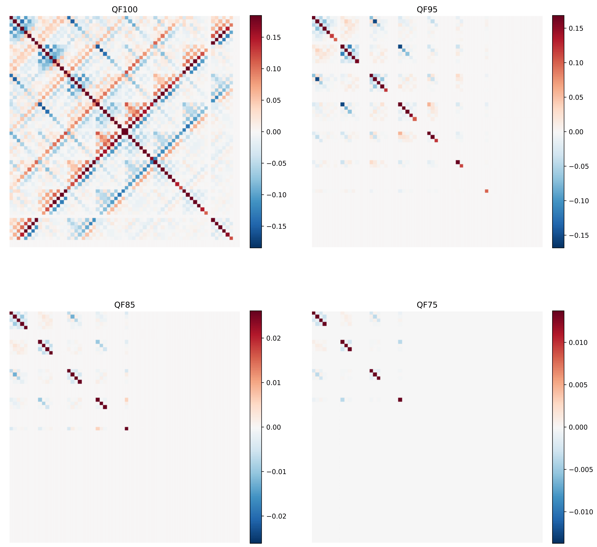
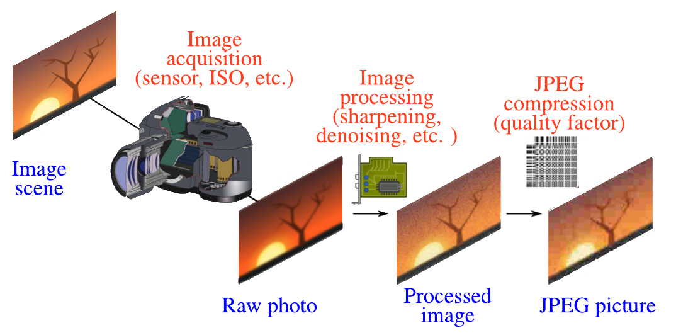
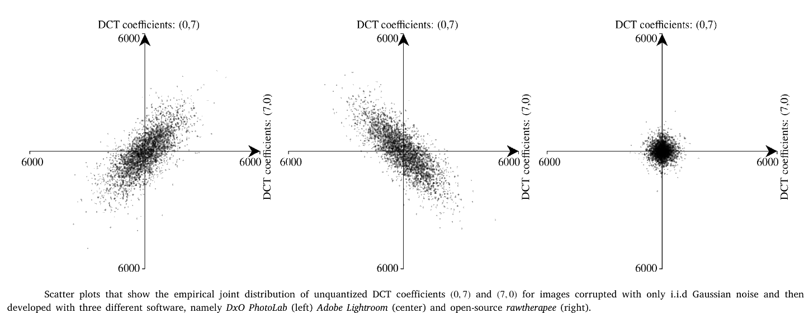

-
PhD
I am currently working on my PhD thesis at the Charles Delaunay Institut at the University of Technology of Troyes, under the supervision of Rémi Cogranne and Patrick Bas.
Current steganography and steganalysis techniques have mainly been developed to work in a controlled setting and are far from adapted to a real-world use. The aim of my PhD is to give guarantees of performance when using these techniques in order for them to be usable in an operationnal environnement. In particular, an embedding scheme should be able to give guarrentees of detectability while a steganalysis method should be able to work at a guarrented false alarm rate.

-

Model-based steganography
To be able to give guarantees in detectability, steganography must rest on a model of natural images. Due to the complexity of the task of giving a model for natural images themselves, the steganographer can, instead, model the noise of natural images.
Once a model is defined for both the cover and stego noise model, one can use a statistical hypothesis testing framework to derive an optimal detector which can be used to formally define detectability. The steganographer can then use this knowledge of the optimal detector to control precisely the detectability of her embedding against this optimal detector. However, to formulate such a model in a general case is still challenging due to the fact that processing pipelines introduces dependencies in the noise and because images are usually compressed. We gave several variants of such steganography schemes using a Gaussian stego signal in these publications : 10.1109/ICASSP40776.2020.9054486, 10.1109/TIFS.2021.3050063 and 10.1109/WIFS49906.2020.9360884
-

ALASKA Challenge
I was co-organizer of the ALASKA steganalysis challenge with Rémi Cogranne and Patrick Bas. ALASKA was a steganalysis challenge which meant to bring steganalysis practice a little bit more into the real-world. The main challenge was to deal with highly diverse datasets of JPEG embedded images. Following an experimental study I had performed (see the Cover-Source Mismatch section), we chose to diversify the parameters which had the highest impact on the current best steganalysis detectors performance : JPEG quality factors, sensors, processing pipeline, image size, embedding algorithms, payloads. I developed most of the Python script used to generate the different datasets in the competition.
The Binghamton research team and I also were contestants in the challenge. We ranked first out of all the other team involved. See our publications for more information on the competitions and what has been learned from them : 10.1145/3335203.3335726 for ALASKA1 and 10.1109/WIFS49906.2020.9360896 for ALASKA2.
-

Cover-Source Mismatch study
Most modern steganalysis method are based on a supervised learning approach. It is well known that such an approach only works if the training test and the testing set are "close" in some sense. For steganalysis in particular, this phenomenon is known as "Cover-Source Mismatch" to refer to the loss of performance when images between training and testing set do not come from the same source.
However, few studies had been performed to define precisely what a source really is in steganalysis. One of a the goals of my thesis was then to delineate the parameters of natural images which truly impact steganalysis.